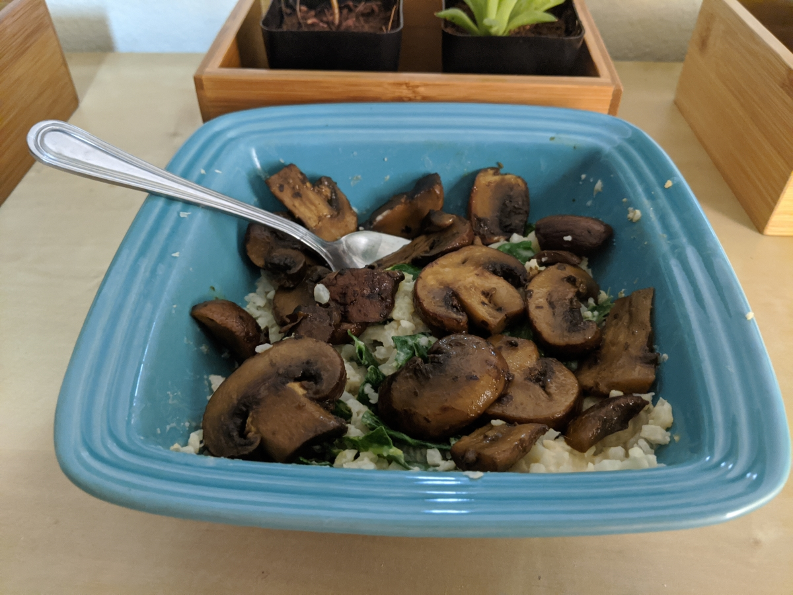

Sauteed Mushroom Cauliflower Rice with Kale and Hummus
A simple, creative meal made super quickly
Ingredients:
- mushrooms
- kale
- cauliflower rice
- garlic
- oil
- hummus
- Preheat a skillet with garlic and oil to medium to medium-high.
- Drop the mushrooms on the skillet and let cook down
- Microwave some cauliflower rice with a sprinkle of water for around 3-4 minutes.
- While mushrooms are cooking, chop up some kale
- Check your mushrooms(should be done in about 10 minutes.)
- Mix up your cauliflower rice with the hummus and kale.
- Once the mushrooms are cooked to your preference enjoy your meal in under 15 minutes!